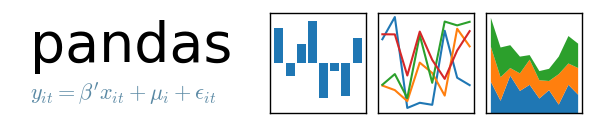

La librería Pandas
Pandas es una librería de Python especializada en el manejo y análisis de estructuras de datos.

Las principales características de esta librería son:
- Define nuevas estructuras de datos basadas en los arrays de la librería NumPy pero con nuevas funcionalidades.
- Permite leer y escribir fácilmente ficheros en formato CSV, Excel y bases de datos SQL.
- Permite acceder a los datos mediante índices o nombres para filas y columnas.
- Ofrece métodos para reordenar, dividir y combinar conjuntos de datos.
- Permite trabajar con series temporales.
- Realiza todas estas operaciones de manera muy eficiente.
Tipos de datos de Pandas
Pandas dispone de tres estructuras de datos diferentes:
- Series: Estructura de una dimensión.
- DataFrame: Estructura de dos dimensiones (tablas).
- Panel: Estructura de tres dimensiones (cubos).
Estas estructuras se construyen a partir de arrays de la librería NumPy, añadiendo nuevas funcionalidades.
La clase de objetos Series
Son estructuras similares a los arrays de una dimensión. Son homogéneas, es decir, sus elementos tienen que ser del mismo tipo, y su tamaño es inmutable, es decir, no se puede cambiar, aunque si su contenido.
Dispone de un índice que asocia un nombre a cada elemento del la serie, a través de la cuál se accede al elemento.
Ejemplo. La siguiente serie contiene las asignaturas de un curso.

Creación de series
Creación de una serie a partir de una lista
Series(data=lista, index=indices, dtype=tipo): Devuelve un objeto de tipo Series con los datos de la listalista, las filas especificados en la listaindicesy el tipo de datos indicado entipo. Si no se pasa la lista de índices se utilizan como índices los enteros del 0 al \(n-1\), done \(n\) es el tamaño de la serie. Si no se pasa el tipo de dato se infiere.
output
Creación de una serie a partir de un diccionario
Series(data=diccionario, index=indices): Devuelve un objeto de tipo Series con los valores del diccionariodiccionarioy las filas especificados en la listaindices. Si no se pasa la lista de índices se utilizan como índices las claves del diccionario.
output
Atributos de una serie
Existen varias propiedades o métodos para ver las características de una serie.
-
s.size: Devuelve el número de elementos de la series. -
s.index: Devuelve una lista con los nombres de las filas del DataFrames. -
s.dtype: Devuelve el tipo de datos de los elementos de la series.
Acceso a los elementos de una serie
El acceso a los elementos de un objeto del tipo Series puede ser a través de posiciones o través de índices (nombres).
Acceso por posición
Se realiza de forma similar a como se accede a los elementos de un array.
s[i]: Devuelve el elemento que ocupa la posicióni+1en la series.s[posiciones]: Devuelve otra serie con los elementos que ocupan las posiciones de la listaposiciones.
Acceso por índice
s[nombre]: Devuelve el elemento con el nombrenombreen el índice.s[nombres]: Devuelve otra serie con los elementos correspondientes a los nombres indicadas en la listanombresen el índice.
output
output
output
Resumen descriptivo de una serie
Las siguientes funciones permiten resumir varios aspectos de una serie:
s.count(): Devuelve el número de elementos que no son nulos niNaNen la series.s.sum(): Devuelve la suma de los datos de la seriescuando los datos son de un tipo numérico, o la concatenación de ellos cuando son del tipo cadenastr.s.cumsum(): Devuelve una serie con la suma acumulada de los datos de la seriescuando los datos son de un tipo numérico.s.value_counts(): Devuelve una serie con la frecuencia (número de repeticiones) de cada valor de la series.s.min(): Devuelve el menor de los datos de la series.s.max(): Devuelve el mayor de los datos de la series.s.mean(): Devuelve la media de los datos de la seriescuando los datos son de un tipo numérico.s.var(): Devuelve la varianza de los datos de la seriescuando los datos son de un tipo numérico.s.std(): Devuelve la desviación típica de los datos de la seriescuando los datos son de un tipo numérico.s.describe(): Devuelve una serie con un resumen descriptivo que incluye el número de datos, su suma, el mínimo, el máximo, la media, la desviación típica y los cuartiles.
output
output
output
output
output
output
output
count 10.000000
mean 2.000000
std 1.054093
min 1.000000
25% 1.000000
50% 2.000000
75% 2.750000
max 4.000000
dtype: float64
Aplicar operaciones a una serie
Los operadores binarios (+, *, /, etc.) pueden utilizarse con una serie, y devuelven otra serie con el resultado de aplicar la operación a cada elemento de la serie.
output
output
Aplicar funciones a una serie
También es posible aplicar una función a cada elemento de la serie mediante el siguiente método:
s.apply(f): Devuelve una serie con el resultado de aplicar la funciónfa cada uno de los elementos de la series.
output
output
Filtrar una serie
Para filtrar una serie y quedarse con los valores que cumplen una determinada condición se utiliza el siguiente método:
s[condicion]: Devuelve una serie con los elementos de la seriesque se corresponden con el valorTruede la lista booleanacondicion.condiciondebe ser una lista de valores booleanos de la misma longitud que la serie.
output
Ordenar una serie
Para ordenar una serie se utilizan los siguientes métodos:
-
s.sort_values(ascending=booleano) : Devuelve la serie que resulta de ordenar los valores la series. Si argumento del parámetroascendingesTrueel orden es creciente y si esFalsedecreciente. -
df.sort_index(ascending=booleano) : Devuelve la serie que resulta de ordenar el índice de la series. Si el argumento del parámetroascendingesTrueel orden es creciente y si esFalsedecreciente.
output
output
Eliminar los dados desconocidos en una serie
Los datos desconocidos representan en Pandas por NaN y los nulos por None. Tanto unos como otros suelen ser un problema a la hora de realizar algunos análisis de datos, por lo que es habitual eliminarlos. Para eliminarlos de una serie se utiliza el siguiente método:
s.dropna(): Elimina los datos desconocidos o nulos de la series.
output
output
La clase de objetos DataFrame
Un objeto del tipo DataFrame define un conjunto de datos estructurado en forma de tabla donde cada columna es un objeto de tipo Series, es decir, todos los datos de una misma columna son del mismo tipo, y las filas son registros que pueden contender datos de distintos tipos.
Un DataFrame contiene dos índices, uno para las filas y otro para las columnas, y se puede acceder a sus elementos mediante los nombres de las filas y las columnas.
Ejemplo. El siguiente DataFrame contiene información sobre los alumnos de un curso. Cada fila corresponde a un alumno y cada columna a una variable.

Creación de un DataFrame
Creación de un DataFrame a partir de un diccionario de listas
Para crear un DataFrame a partir de un diccionario cuyas claves son los nombres de las columnas y los valores son listas con los datos de las columnas se utiliza el método:
DataFrame(data=diccionario, index=filas, columns=columnas, dtype=tipos): Devuelve un objeto del tipo DataFrame cuyas columnas son las listas contenidas en los valores del diccionariodiccionario, los nombres de filas indicados en la listafilas, los nombres de columnas indicados en la listacolumnasy los tipos indicados en la listatipos. La listafilastiene que tener el mismo tamaño que las listas del diccionario, mientras que las listascolumnasytipostienen que tener el mismo tamaño que el diccionario. Si no se pasa la lista de filas se utilizan como nombres los enteros empezando en 0. Si no se pasa la lista de columnas se utilizan como nombres las claves del diccionario. Si no se pasa la lista de tipos, se infiere.
Los valores asociados a las claves del diccionario deben ser listas del mismo tamaño.
output
nombre edad grado correo
0 María 18 Economía maria@gmail.com
1 Luis 22 Medicina luis@yahoo.es
2 Carmen 20 Arquitectura carmen@gmail.com
3 Antonio 21 Economía antonio@gmail.com
Creación de un DataFrame a partir de una lista de listas
Para crear un DataFrame a partir de una lista de listas con los datos de las columnas se utiliza el siguiente método:
DataFrame(data=listas, index=filas, columns=columnas, dtype=tipos): Devuelve un objeto del tipo DataFrame cuyas columnas son los valores de las listas de la listalistas, los nombres de filas indicados en la listafilas, los nombres de columnas indicados en la listacolumnasy los tipos indicados en la listatipos. La listafilas, tiene que tener el mismo tamaño que la listalistasmientras que las listascolumnasytipostienen que tener el mismo tamaño que las listas anidadas enlistas. Si no se pasa la lista de filas o de columnas se utilizan enteros empezando en 0. Si no se pasa la lista de tipos, se infiere.
Si las listas anidadas en listas no tienen el mismo tamaño, las listas menores se rellenan con valores NaN.
output
Creación de un DataFrame a partir de una lista de diccionarios
Para crear un DataFrame a partir de una lista de diccionarios con los datos de las filas, se utiliza el siguiente método:
DataFrame(data=diccionarios, index=filas, columns=columnas, dtype=tipos): Devuelve un objeto del tipo DataFrame cuyas filas contienen los valores de los diccionarios de la listadiccionarios, los nombres de filas indicados en la listafilas, los nombres de columnas indicados en la listacolumnasy los tipos indicados en la listatipos. La listafilastiene que tener el mismo tamaño que la listalista. Si no se pasa la lista de filas se utilizan enteros empezando en 0. Si no se pasa la lista de columnas se utilizan las claves de los diccionarios. Si no se pasa la lista de tipos, se infiere.
Si los diccionarios no tienen las mismas claves, las claves que no aparecen en el diccionario se rellenan con valores NaN.
output
Creación de un DataFrame a partir de un array
Para crear un DataFrame a partir de un array de NumPy se utiliza el siguiente método:
DataFrame(data=array, index=filas, columns=columnas, dtype=tipo): Devuelde un objeto del tipo DataFrame cuyas filas y columnas son las del arrayarray, los nombres de filas indicados en la listafilas, los nombres de columnas indicados en la listacolumnasy el tipo indicado entipo. La listafilastiene que tener el mismo tamaño que el número de filas del array y la listacolumnasel mismo tamaño que el número de columnas del array. Si no se pasa la lista de filas se utilizan enteros empezando en 0. Si no se pasa la lista de columnas se utilizan las claves de los diccionarios. Si no se pasa la lista de tipos, se infiere.
output
a b c
0 -1.408238 0.644706 1.077434
1 -0.279264 -0.249229 1.019137
2 -0.805470 -0.629498 0.935066
3 0.236936 -0.431673 -0.177379
Creación de un DataFrame a partir de un fichero CSV o Excel
Dependiendo del tipo de fichero, existen distintas funciones para importar un DataFrame desde un fichero.
-
read_csv(fichero.csv, sep=separador, header=n, index_col=m, na_values=no-validos, decimal=separador-decimal): Devuelve un objeto del tipo DataFrame con los datos del fichero CSVfichero.csvusando como separador de los datos la cadenaseparador. Como nombres de columnas se utiliza los valores de la filany como nombres de filas los valores de la columnam. Si no se indicamse utilizan como nombres de filas los enteros empezando en 0. Los valores incluídos en la listano-validosse convierten enNaN. Para los datos numéricos se utiliza como separador de decimales el carácter indicado enseparador-decimal. -
read_excel(fichero.xlsx, sheet_name=hoja, header=n, index_col=m, na_values=no-validos, decimal=separador-decimal): Devuelve un objeto del tipo DataFrame con los datos de la hoja de cálculohojadel fichero Excelfichero.xlsx. Como nombres de columnas se utiliza los valores de la filany como nombres de filas los valores de la columnam. Si no se indicamse utilizan como nombres de filas los enteros empezando en 0. Los valores incluídos en la listano-validosse convierten enNaN. Para los datos numéricos se utiliza como separador de decimales el carácter indicado enseparador-decimal.
output
nombre edad sexo peso altura colesterol
0 José Luis Martínez Izquierdo 18 H 85.0 1.79 182.0
1 Rosa Díaz Díaz 32 M 65.0 1.73 232.0
2 Javier García Sánchez 24 H NaN 1.81 191.0
3 Carmen López Pinzón 35 M 65.0 1.70 200.0
4 Marisa López Collado 46 M 51.0 1.58 148.0
Exportación de ficheros
También existen funciones para exportar un DataFrame a un fichero con diferentes formatos.
-
df.to_csv(fichero.csv, sep=separador, columns=booleano, index=booleano): Exporta el DataFramedfal ficherofichero.csven formato CSV usando como separador de los datos la cadenaseparador. Si se pasaTrueal parámetrocolumnsse exporta también la fila con los nombres de columnas y si se pasaTrueal parámetroindexse exporta también la columna con los nombres de las filas. -
df.to_excel(fichero.xlsx, sheet_name = hoja, columns=booleano, index=booleano): Exporta el DataFramedfa la hoja de cálculohojadel ficherofichero.xlsxen formato Excel. Si se pasaTrueal parámetrocolumnsse exporta también la fila con los nombres de columnas y si se pasaTrueal parámetroindexse exporta también la columna con los nombres de las filas.
Atributos de un DataFrame
Existen varias propiedades o métodos para ver las características de un DataFrame.
-
df.info(): Devuelve información (número de filas, número de columnas, índices, tipo de las columnas y memoria usado) sobre el DataFramedf. -
df.shape: Devuelve una tupla con el número de filas y columnas del DataFramedf. -
df.size: Devuelve el número de elementos del DataFrame. -
df.columns: Devuelve una lista con los nombres de las columnas del DataFramedf. -
df.index: Devuelve una lista con los nombres de las filas del DataFramedf. -
df.dtypes: Devuelve una serie con los tipos de datos de las columnas del DataFramedf. -
df.head(n): Devuelve lasnprimeras filas del DataFramedf. -
df.tail(n): Devuelve lasnúltimas filas del DataFramedf.
output
output
output
Renombrar los nombres de las filas y columnas
Para cambiar el nombre de las filas y las columnas de un DataFrame se utiliza el siguiente método:
df.rename(columns=columnas, index=filas): Devuelve el DataFrame que resulta de renombrar las columnas indicadas en las claves del diccionariocolumnascon sus valores y las filas indicadas en las claves del diccionariofilascon sus valores en el DataFramedf.
output
nombre y apellidos edad sexo peso estatura colesterol
1000 José Luis Martínez Izquierdo 18 H 85.0 1.79 182.0
1001 Rosa Díaz Díaz 32 M 65.0 1.73 232.0
1002 Javier García Sánchez 24 H NaN 1.81 191.0
3 Carmen López Pinzón 35 M 65.0 1.70 200.0
4 Marisa López Collado 46 M 51.0 1.58 148.0
...
Cambiar el índice de un DataFrame
Aunque el índice de un DataFrame suele fijarse en la creación del mismo, en ocasiones puede ser necesario cambiar el índice una vez creado el DataFrame. Para ello se utiliza el siguiente método:
df.set_index(keys = columnas, verify_integrity = bool): Devuelve el DataFrame que resulta de eliminar las columnas de la listacolumnasy convertirlas en el nuevo índice. El parámetroverify_integrityrecibe un booleano (Falsepor defecto) y realiza una comprobación para evitar duplicados en la clave cuando recibeTrue.
output
edad sexo peso altura colesterol
nombre
José Luis Martínez Izquierdo 18 H 85.0 1.79 182.0
Rosa Díaz Díaz 32 M 65.0 1.73 232.0
Javier García Sánchez 24 H NaN 1.81 191.0
Carmen López Pinzón 35 M 65.0 1.70 200.0
Marisa López Collado 46 M 51.0 1.58 148.0
>>>
Reindexar un DataFrame
Para reordenar los índices de las filas y las columnas de un DataFrame, así como añadir o eliminar índices, se utiliza el siguiente método:
df.reindex(index=filas, columns=columnas, fill_value=relleno): Devuelve el DataFrame que resulta de tomar del DataFramedflas filas con nombres en la listafilasy las columnas con nombres en la listacolumnas. Si alguno de los nombres indicados enfilasocolumnasno existía en el DataFramedf, se crean filan o columnas nuevas rellenas con el valorrelleno.
output
nombre tensión colesterol
4 Marisa López Collado NaN 148.0
3 Carmen López Pinzón NaN 200.0
1 Rosa Díaz Díaz NaN 232.0
Acceso a los elementos de un DataFrame
El acceso a los datos de un DataFrame se puede hacer a través de posiciones o través de los nombres de las filas y columnas.
Accesos mediante posiciones
-
df.iloc[i, j]: Devuelve el elemento que se encuentra en la filaiy la columnajdel DataFramedf. Pueden indicarse secuencias de índices para obtener partes del DataFrame. -
df.iloc[filas, columnas]: Devuelve un DataFrame con los elementos de las filas de la listafilasy de las columnas de la listacolumnas. -
df.iloc[i]: Devuelve una serie con los elementos de la filaidel DataFramedf.
output
Acceso a los elementos mediante nombres
df.loc[fila, columna]: Devuelve el elemento que se encuentra en la fila con nombrefilay la columna de con nombrecolumnadel DataFramedf.
df.loc[filas, columnas] : Devuelve un DataFrame con los elemento que se encuentra en las filas con los nombres de la lista filas y las columnas con los nombres de la lista columnas del DataFrame df.
-
df[columna]: Devuelve una serie con los elementos de la columna de nombrecolumnadel DataFramedf. -
df.columna: Devuelve una serie con los elementos de la columna de nombrecolumnadel DataFramedf. Es similar al método anterior pero solo funciona cuando el nombre de la columna no tiene espacios en blanco.
output
output
Operaciones con las columnas de un DataFrame
Añadir columnas a un DataFrame
El procedimiento para añadir una nueva columna a un DataFrame es similar al de añadir un nuevo par a un diccionario, pero pasando los valores de la columna en una lista o serie.
-
d[nombre] = lista: Añade al DataFramedfuna nueva columna con el nombrenombrey los valores de la listalista. La lista debe tener el mismo tamaño que el número de filas dedf. -
d[nombre] = serie: Añade al DataFramedfuna nueva columna con el nombrenombrey los valores de la serieserie. Si el tamaño de la serie es menor que el número de filas dedfse rellena con valoresNaNmientras que si es mayor se recorta.
output
nombre edad sexo peso altura colesterol diabetes
0 José Luis Martínez Izquierdo 18 H 85.0 1.79 182.0 False
1 Rosa Díaz Díaz 32 M 65.0 1.73 232.0 False
2 Javier García Sánchez 24 H NaN.0 1.81 191.0 True
3 Carmen López Pinzón 35 M 65.0 1.70 200.0 False
4 Marisa López Collado 46 M 51.0 1.58 148.0 True
5 Antonio Ruiz Cruz 68 H 66.0 1.74 249.0 NaN
...
Operaciones sobre columnas
Puesto que los datos de una misma columna de un DataFrame son del mismo tipo, es fácil aplicar la misma operación a todos los elementos de la columna.
output
output
Aplicar funciones a columnas
Para aplicar funciones a todos los elementos de una columna se utiliza el siguiente método:
df[columna].apply(f): Devuelve una serie con los valores que resulta de aplicar la funciónfa los elementos de la columna con nombrecolumnadel DataFramedf.
output
Convertir una columna al tipo datetime
A menudo una columna contiene cadenas que representan fechas. Para convertir estas cadenas al tipo datetime se utiliza el siguiente método:
to_datetime(columna, formato): Devuelve la serie que resulta de convertir las cadenas de la columna con el nombrecolumnaen fechas del tipodatetimecon el formado especificado enformato. (Ver librería datetime)
output
Resumen descriptivo de un DataFrame
Al igual que para las series, los siguientes métodos permiten resumir la información de un DataFrame por columnas:
df.count(): Devuelve una serie con el número de elementos que no son nulos niNaNen cada columna del DataFramedf.df.sum(): Devuelve una serie con la suma de los datos de las columnas del DataFramedfcuando los datos son de un tipo numérico, o la concatenación de ellos cuando son del tipo cadenastr.df.cumsum(): Devuelve un DataFrame con la suma acumulada de los datos de las columnas del DataFramedfcuando los datos son de un tipo numérico.df.min(): Devuelve una serie con los menores de los datos de las columnas del DataFramedf.df.max(): Devuelve una serie con los mayores de los datos de las columnas del DataFramedf.df.mean(): Devuelve una serie con las medias de los datos de las columnas numéricas del DataFramedf.df.var(): Devuelve una serie con las varianzas de los datos de las columnas numéricas del DataFramedf.df.std(): Devuelve una serie con las desviaciones típicas de los datos de las columnas numéricas del DataFramedf.df.cov(): Devuelve un DataFrame con las covarianzas de los datos de las columnas numéricas del DataFramedf.df.corr(): Devuelve un DataFrame con los coeficientes de correlación de Pearson de los datos de las columnas numéricas del DataFramedf.df.describe(include = tipo): Devuelve un DataFrame con un resumen estadístico de las columnas del DataFramedfdel tipotipo. Para los datos numéricos (number) se calcula la media, la desviación típica, el mínimo, el máximo y los cuartiles. Para los datos no numéricos (object) se calcula el número de valores, el número de valores distintos, la moda y su frecuencia. Si no se indica el tipo solo se consideran las columnas numéricas.
output
edad peso altura colesterol
edad 244.027473 -69.891026 -0.326593 279.717949
peso -69.891026 260.076923 1.764615 -2.424242
altura -0.326593 1.764615 0.013229 0.563269
colesterol 279.717949 -2.424242 0.563269 1587.858974
output
edad peso altura colesterol
edad 1.000000 -0.276185 -0.181774 0.452391
peso -0.276185 1.000000 0.918984 -0.003621
altura -0.181774 0.918984 1.000000 0.122694
colesterol 0.452391 -0.003621 0.122694 1.000000
output
edad peso altura colesterol
count 14.000000 13.000000 14.000000 13.000000
mean 38.214286 70.923077 1.768571 220.230769
std 15.621379 16.126901 0.115016 39.847948
min 18.000000 51.000000 1.580000 148.000000
25% 24.750000 61.000000 1.705000 194.000000
50% 35.000000 65.000000 1.755000 210.000000
75% 49.750000 78.000000 1.840000 249.000000
max 68.000000 109.000000 1.980000 280.000000
output
Eliminar columnas de un DataFrame
Para eliminar columnas de un DataFrame se utilizan los siguientes métodos:
-
del d[nombre]: Elimina la columna con nombrenombredel DataFramedf. -
df.pop(nombre): Elimina la columna con nombrenombredel DataFramedfy la devuelve como una serie.
output
nombre sexo peso altura colesterol
0 José Luis Martínez Izquierdo H 85.0 1.79 182.0
1 Rosa Díaz Díaz M 65.0 1.73 232.0
2 Javier García Sánchez H
NaN 1.81 191.0
...
output
Operaciones con las filas de un DataFrame
Añadir una fila a un DataFrame
Para añadir una fila a un DataFrame se utiliza el siguiente método:
df.append(serie, ignore_index=True): Devuelve el DataFrame que resulta de añadir una fila al DataFramedfcon los valores de la serieserie. Los nombres del índice de la serie deben corresponderse con los nombres de las columnas dedf. Si no se pasa el parámetroignore_indexentonces debe pasarse el parámetronamea la serie, donde su argumento será el nombre de la nueva fila.
output
nombre edad sexo peso altura colesterol
10 Macarena Álvarez Luna 53 M 55.0 1.62 262.0
11 José María de la Guía Sanz 58 H 78.0 1.87 198.0
12 Miguel Angel Cuadrado Gutiérrez 27 H 109.0 1.98 210.0
13 Carolina Rubio Moreno 20 M 61.0 1.77 194.0
14 Carlos Rivas 28 H 89.0 1.78 245.0
Eliminar filas de un DataFrame
Para eliminar filas de un DataFrame se utilizan el siguiente método:
df.drop(filas): Devuelve el DataFrame que resulta de eliminar las filas con los nombres indicados en la listafilasdel DataFramedf.
output
nombre edad sexo peso altura colesterol
0 José Luis Martínez Izquierdo 18 H 85.0 1.79 182.0
2 Javier García Sánchez 24 H NaN 1.81 191.0
4 Marisa López Collado 46 M 51.0 1.58 148.0
...
Filtrar las filas de un DataFrame
Una operación bastante común con un DataFrame es obtener las filas que cumplen una determinada condición.
df[condicion]: Devuelve un DataFrame con las filas del DataFramedfque se corresponden con el valorTruede la lista booleanacondicion.condiciondebe ser una lista de valores booleanos de la misma longitud que el número de filas del DataFrame.
output
nombre edad sexo peso altura colesterol
6 Antonio Fernández Ocaña 51 H 62.0 1.72 276.0
9 Santiago Reillo Manzano 46 H 75.0 1.85 280.0
Ordenar un DataFrame
Para ordenar un DataFrame de acuerdo a los valores de una determinada columna se utilizan los siguientes métodos:
-
df.sort_values(columna, ascending=booleano) : Devuelve el DataFrame que resulta de ordenar las filas del DataFramedfsegún los valores del la columna con nombrecolumna. Si argumento del parámetroascendingesTrueel orden es creciente y si esFalsedecreciente. -
df.sort_index(ascending=booleano) : Devuelve el DataFrame que resulta de ordenar las filas del DataFramedfsegún los nombres de las filas. Si el argumento del parámetroascendingesTrueel orden es creciente y si esFalsedecreciente.
output
nombre edad sexo peso altura colesterol
4 Marisa López Collado 46 M 51.0 1.58 148.0
0 José Luis Martínez Izquierdo 18 H 85.0 1.79 182.0
2 Javier García Sánchez 24 H NaN 1.81 191.0
13 Carolina Rubio Moreno 20 M 61.0 1.77 194.0
...
Eliminar las filas con dados desconocidos en un DataFrame
Para eliminar las filas de un DataFrame que contienen datos desconocidos NaN o nulos None se utiliza el siguiente método:
s.dropna(subset=columnas): Devuelve el DataFrame que resulta de eliminar las filas que contienen algún dato desconocido o nulo en las columnas de la listacolumnadel DataFramedf. Si no se pasa un argumento al parámetrosubsetse aplica a todas las columnas del DataFrame.
output
nombre edad sexo peso altura colesterol
0 José Luis Martínez Izquierdo 18 H 85.0 1.79 182.0
1 Rosa Díaz Díaz 32 M 65.0 1.73 232.0
3 Carmen López Pinzón 35 M 65.0 1.70 200.0
4 Marisa López Collado 46 M 51.0 1.58 148.0
...
Agrupación de un DataFrame
En muchas aplicaciones es útil agrupar los datos de un DataFrame de acuerdo a los valores de una o varias columnas (categorías), como por ejemplo el sexo o el país.
Dividir un DataFrame en grupos
Para dividir un DataFrame en grupos se utiliza el siguiente método:
df.groupby(columnas).groups: Devuelve un diccionario con cuyas claves son las tuplas que resultan de todas las combinaciones de los valores de las columnas con nombres en la listacolumnas, y valores las listas de los nombres de las filas que contienen esos valores en las correspondientes columnas del DataFramedf.
Para obtener un grupo concreto se utiliza el siguiente método:
df.groupby(columnas).get_group(valores): Devuelve un DataFrame con las filas del DataFramedfque cumplen que las columnas de la listacolumnaspresentan los valores de la tuplavalores. La listacolumnasy la tuplavaloresdeben tener el mismo tamaño.
output
nombre edad sexo peso altura colesterol
1 Rosa Díaz Díaz 32 M 65.0 1.73 232.0
3 Carmen López Pinzón 35 M 65.0 1.70 200.0
4 Marisa López Collado 46 M 51.0 1.58 148.0
7 Pilar Martín González 22 M 60.0 1.66 NaN
10 Macarena Álvarez Luna 53 M 55.0 1.62 262.0
13 Carolina Rubio Moreno 20 M 61.0 1.77 194.0
Aplicar una función de agregación por grupos
Una vez dividido el DataFame en grupos, es posible aplicar funciones de agregación a cada grupo mediante el siguiente método:
df.groupby(columnas).agg(funciones): Devuelve un DataFrame con el resultado de aplicar las funciones de agregación de la listafuncionesa cada uno de los DataFrames que resultan de dividir el DataFrame según las columnas de la listacolumnas.
Una función de agregación toma como argumento una lista y devuelve una único valor. Algunas de las funciones de agregación más comunes son:
np.min: Devuelve el mínimo de una lista de valores.np.max: Devuelve el máximo de una lista de valores.np.count_nonzero: Devuelve el número de valores no nulos de una lista de valores.np.sum: Devuelve la suma de una lista de valores.np.mean: Devuelve la media de una lista de valores.np.std: Devuelve la desviación típica de una lista de valores.
output
edad peso altura colesterol
sexo
H 40.875000 80.714286 1.837500 228.375
M 34.666667 59.500000 1.676667 207.200
Reestructurar un DataFrame
A menudo la disposición de los datos en un DataFrame no es la adecuada para su tratamiento y es necesario reestructurar el DataFrame. Los datos que contiene un DataFrame pueden organizarse en dos formatos: ancho y largo.

Convertir un DataFrame a formato largo
Para convertir un DataFrame de formato ancho a formato largo (columnas a filas) se utiliza el siguiente método:
df.melt(id_vars=id-columnas, value_vars=columnas, var_name=nombre-columnas, var_value=nombre-valores): Devuelve el DataFrame que resulta de convertir el DataFramedfde formato ancho a formato largo. Todas las columnas de listacolumnasse reestructuran en dos nuevas columnas con nombresnombre-columnasynombre-valoresque contienen los nombres de las columnas originales y sus valores, respectivamente. Las columnas en la listaid-columnasse mantienen sin reestructurar. Si no se pasa la listacolumnasentonces se reestructuran todas las columnas excepto las columnas de la listaid-columnas.
output
nombre edad asignatura nota
0 María 18 Matemáticas 8.5
1 Luis 22 Matemáticas 7.0
2 Carmen 20 Matemáticas 3.5
3 María 18 Economía 8.0
4 Luis 22 Economía 6.5
5 Carmen 20 Economía 5.0
6 María 18 Programación 6.5
7 Luis 22 Programación 4.0
8 Carmen 20 Programación 9.0
Convertir un DataFrame a formato ancho
Para convertir un DataFrame de formato largo a formato ancho (filas a columnas) se utiliza el siguiente método:
df.pivot(index=filas, columns=columna, values=valores): Devuelve el DataFrame que resulta de convertir el DataFramedfde formato largo a formato ancho. Se crean tantas columnas nuevas como valores distintos haya en la columnacolumna. Los nombres de estas nuevas columnas son los valores de la columnacolumnamientras que sus valores se toman de la columnavalores. Los nombres del índice del nuevo DataFrame se toman de los valores de la columnafilas.
output
asignatura Economía Matemáticas Programación
nombre
Carmen 5.0 3.5 9.0
Luis 6.5 7.0 4.0
María 8.0 8.5 6.5
Combinar varios DataFrames
Dos o más DataFrames pueden combinarse en otro DataFrame. La combinación puede ser de varias formas:
- Concatenación: Combinación de varios DataFrames concatenando sus filas o columnas.
- Mezcla: Combinación de varios DataFrames usando columnas o índices comunes.
Concatenación de DataFrames
-
Concatenación de filas. Las filas de los DataFrames se concatenan unas a continuación de las otras para formar el nuevo DataFrame. Para ello es necesario que los DataFrames que se combinen tengan el mismo índice de columnas.
-
Concatenación de columnas. Las columnas de los DataFrames se concatenan unas a continuación de las otras para formar el nuevo DataFrame. Para ello es necesario que los DataFrames que se combinen tengan el mismo índice de filas.
Para concatenar dos o más DataFrames se utiliza el siguiente método:
df.concat(dataframes, axis = eje): Devuelve el DataFrame que resulta de concatenar los DataFrames de la listadataframes. Siejees 0 (valor por defecto) la concatenación se realiza por filas, y siejees 1 se realiza por columnas.
Si los DataFrames que se concatenan por filas no tienen el mismo índice de columnas, el DataFrame resultante incluirá todas las columnas existentes en los DataFrames y rellenará con valores NaN los datos no disponibles. Si los DataFrames que se concatenan por columnas no tienen el mismo índice de filas, el DataFrame resultante incluirá todas las filas existentes en los DataFrames y rellenará con valores NaN los datos no disponibles.
output
output
Mezcla de DataFrames
La mezcla de DataFrames permite integrar filas de dos DataFrames que contienen información en común en una o varias columnas o índices que se conocen como clave.
Para mezclar dos DataFrames se utiliza el siguiente método:
df.merge(df1, df2, on = clave, how = tipo): Devuelve el DataFrame que resulta de mezclar el DataFramedf2con el DataFramedf1, usando como claves las columnas de la listaclavey siguiendo el método de mezcla indicado portipo.
El tipo de mezcla puede ser
"inner"(por defecto): El DataFrame resultante solo contiene las filas cuyos valores en la clave están en los dos DataFrames. Es equivalente a la intersección de conjuntos.
output
"outer": El DataFrame resultante contiene todas las filas de los dos DataFrames. Si una fila de un DataFrame no puede emparejarse con otra los mismos valores en la clave en el otro DataFrame, la fila se añade igualmente al DataFrame resultante rellenando las columnas del otro DataFrame con el valorNaN. Es equivalente a la unión de conjuntos.
output
"left": El DataFrame resultante contiene todas las filas del primer DataFrame y descarta las filas del segundo DataFrame que no pueden emparejarse con alguna fila del primer DataFrame a través de la clave.
output
"right": El DataFrame resultante contiene todas las filas del segundo DataFrame y descarta las filas del primer DataFrame que no pueden emparejarse con alguna fila del segundo DataFrame a través de la clave.
output